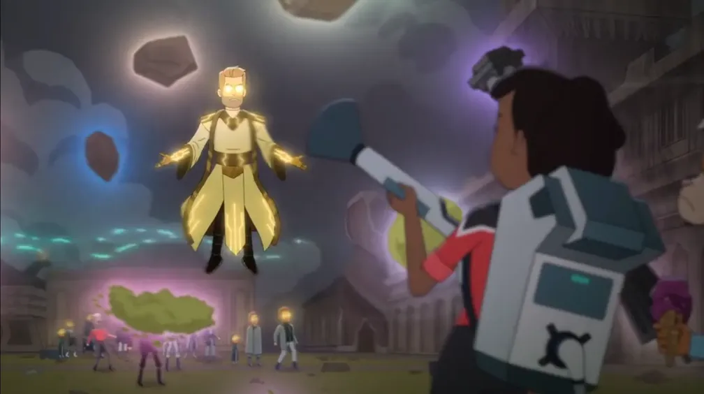
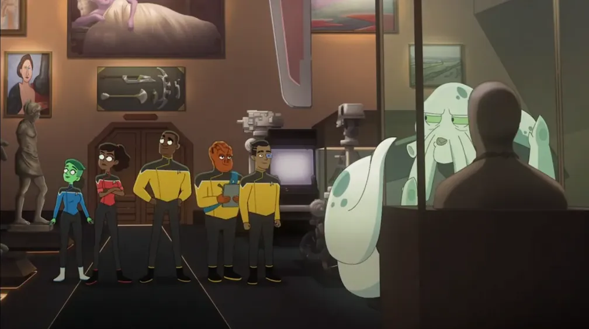
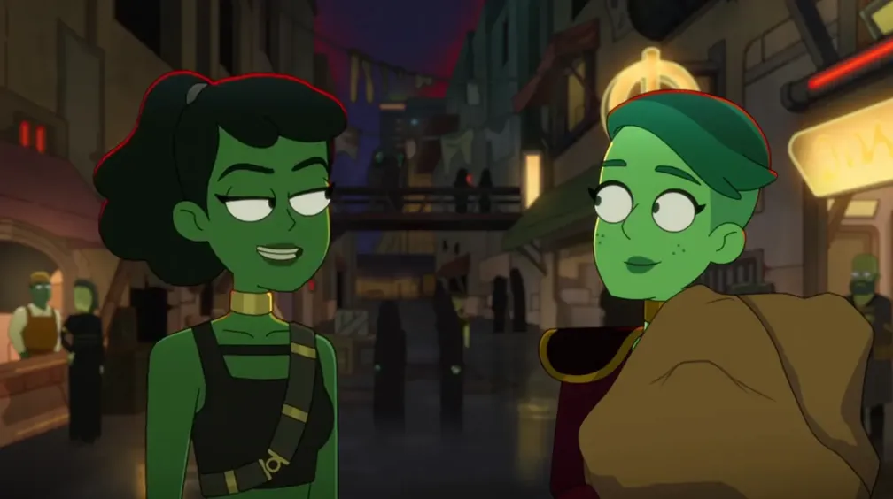
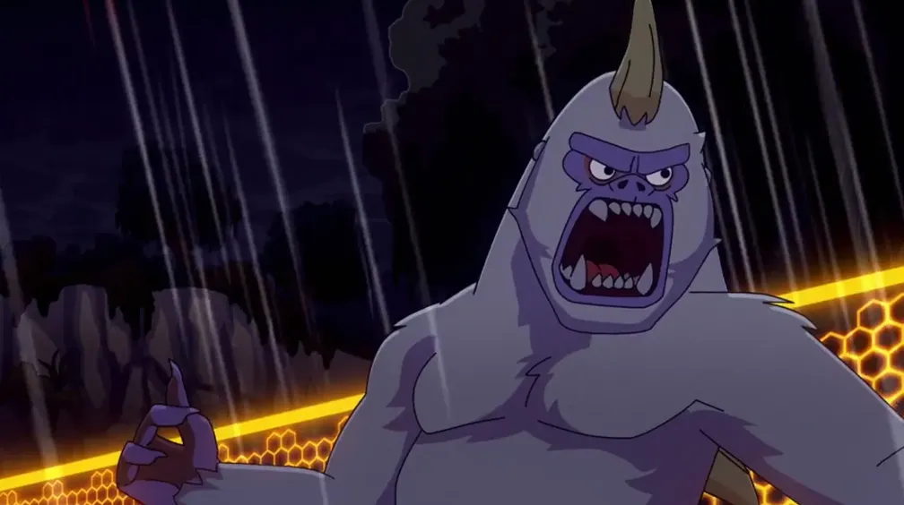
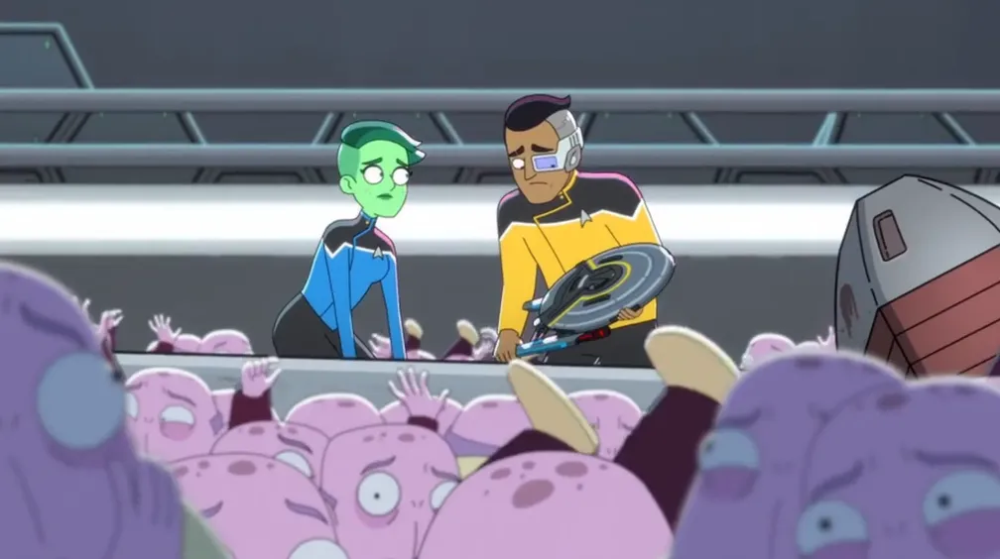
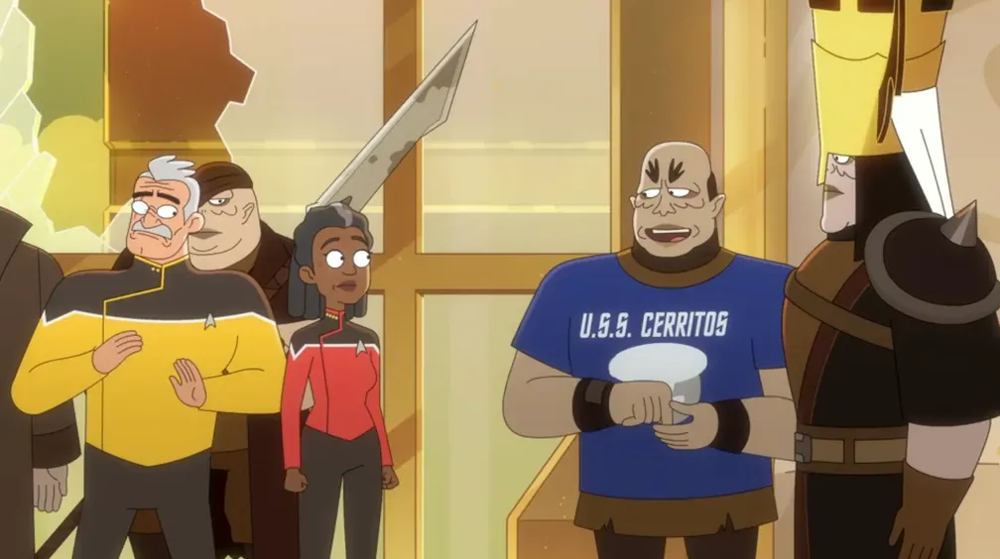
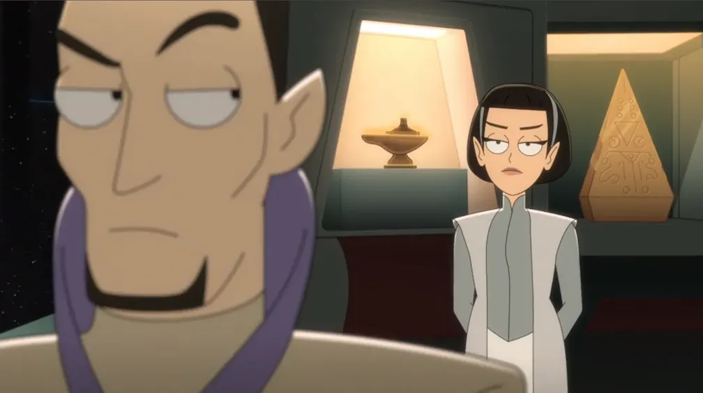
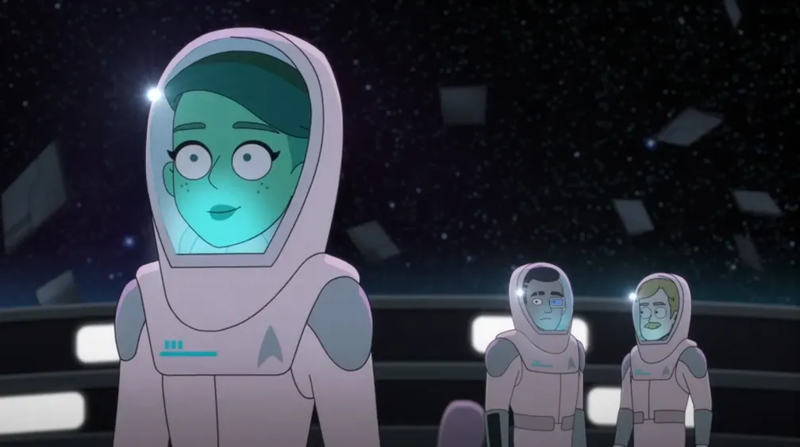

Season 2 gets an overall average score a little higher than Season 1, and it introduces a bit of a mystery sub-plot regarding Rutherford's cybernetic implant. We'll have more guest stars appearing this season, and more fun with the Pakleds. The season will wrap up with the highly-rated penultimate episode, “wej Duj”, and another action-packed season finale.
Mariner, working out aggression over Boimler leaving, accidentally exposes Ransom to “strange energies” that turn him into a vengeful godlike being who is angry over Freeman and Mariner's newfound, fake friendship. Tendi vows to fix what she believes is a malfunctioning Rutherford.

❗
Important Episode Some important follow-up to the previous season finale.
🔗️
This episode is generally a reference to TOS 1x03: Where No Man Has Gone Before, where a man named Gary Mitchell gains new abilities after he is exposed to “strange energies”. Doctor T'Ana mentions Gary shortly after diagnosing Ransom.
🔗︎
Minor references:
The opening scene in the Cardassian interrogation chamber as well as Boimler's quote “They keep showing me lights!” are referencing TNG 6x10 & 6x11: Chain of Command where Picard was subjected to physical and psychological torture at the hands of the Cardassians.
“
F*** pears! — Rutherford
Thoughts: In case you don't remember what happened last season, the opening scene rehashes the important points in a sort of ham-fisted way. Anyway, this is another unremarkable season opener that feels more like a mid-season filler story.
Kayshon, the new head of security, leads a mission where the lower-deckers have to clean up the extensive collection of a deceased collector. Boimler has trouble fitting in with his new role on the Titan, and then he gets transporter-duplicated.

🔗️
The collectors and their attempts to collect Commander Data are a reference to the TNG episode TNG 3x22: The Most Toys.
🔗️
Kayshon is a Tamarian. Their species first appeared in TNG 5x02: Darmok, where Picard first discovered that their language is based on metaphor. Kayshon utters several lines from that episode.
At the end of the episode, Jet Manhaver is suddenly seen wearing lieutenant's pips, but he brushes one of the pips away and explains that it was just a piece of corn. He says “Half the time when you see someone with the wrong amount of pips around here, it's usually just delicious street corn!” This pokes fun at the numerous times across the entire Star Trek franchise where officers were seen with the wrong rank insignia. Jet, himself, was seen with lieutenant's pips in Season 1, along with Shaxs who sometimes incorrectly wore commander's pips.
Other notable characters who wore incorrect insignia include Chief O'Brien in TNG, Lieutenants Paris, Torres, and Tuvok in VOY, and Valeris from Star Trek VI: The Undiscovered Country.
🔗︎
Minor references:
Regarding the away team's late arrival, Siggi says “What'd you do, stop to debate the human rights of a robot?” This is a reference to TNG 2x09: The Measure of a Man, where Data's rights as an individual were litigated.
There are a ton of easter eggs among the collector's collection – I will only point out some of them...
Shortly after arriving on the collector's ship, Mariner briefly picks up some sort of headset and then places it back onto an orange-colored bust. The headset is the addicting game that took over the Enterprise‑D in the aptly named episode, TNG 5x06: The Game. The bust is a likeness of Captain Jean-Luc Picard, sculpted by one of the children on the Enterprise‑D for “Captain Picard Day”, as seen in TNG 7x12: The Pegasus.
Rutherford inventories “another old disintegrator”. Worf used one of these weapons in Star Trek: Insurrection.
The gigantic skeleton wearing a tattered blue Starfleet uniform is ostensibly that of Spock Two, from TAS 1x07: The Infinite Vulcan.
When escaping from the flying vacuum cleaners, the gang hide in a diorama featuring the remains of two Excalbians, with one having taken the form of Abraham Lincoln and still wearing his stovepipe hat. These aliens were from the TOS episode TOS 3x22: The Savage Curtain.
When starting to bond with the newly-duplicated Boimler, Riker asks the computer to play “Night Bird”. This is another nod to the episode TNG 6x24: Second Chances, where Riker was unable to perform the trombone solo from the piece.
“
(sotto voce) More like ‘suck-up at Tanagra’. — Mariner
Thoughts: Above, I barely covered all of the little easter eggs thrown in throughout the collector's... collection. (Is that Picard's painting from TNG 3x14: A Matter of Perspective that “quite inappropriately attempts to juxtapose the disparate cubistic styles of Picasso and Leger”?) This episode gets an extra half-star from me just for the added fun of trying to find all the hidden references.
Tendi takes Mariner on a mission to retrieve a Caitian libido post for Dr. T'ana, but nearly everything goes wrong for them, including the discovery that they don't know each other as well as they thought. Rutherford frets over Shaxs's mysterious return. Boimler's security clearance on Cerritos hasn't quite come through.

❗
Important Episode An important backstory for Tendi that will come into play in a later season.
The title of this episode is a play on the famous line, “We'll always have Paris” from the 1942 film Casablanca. There's an unrelated TNG episode also named after the line, TNG 1x24: We'll Always Have Paris.
When Boimler brings up Tom Paris, Mariner asks “Is he still a salamander?” and Boimler mentions that Tom was the first human to break the trans-warp barrier. These are references to arguably the worst episode of Voyager, VOY 2x15: Threshold where Tom travels at Warp 10 and then... well, he... turns into a salamander.
Boimler and Mariner list off a few possible ways that Shaxs could have come back from the dead...
Boimler suggests a “transporter pattern buffer thing”, likely referencing Scotty preserving himself in a transporter pattern buffer for 75 years in TNG 6x04: Relics.
Mariner suggests a restored katra, and Boimler says he could have been “Genesis Deviced”, both referring to Spock's restoration in Star Trek III: The Search for Spock.
Then Mariner suggests a Mirror Universe switcheroo, referencing characters from Star Trek: Discovery who were replaced by their alternate universe counterparts, such as Spoiler » Phillipa Georgiou.
Next, she suggests that the Borg may have rebuilt him, probably referencing Neelix's restoration using Borg nanoprobes in VOY 4x12: Mortal Coil.
Boimler says he could be a “future son from an alternate timeline”, likely referencing Tasha Yar's daughter, Sela, who was revealed in TNG 5x01: Redemption II.
The “time ribbon” or “Nexus” (same thing), refers to Star Trek: Generations. Later, one of the Shaxs hallucinations that Rutherford experiences says “It's always Christmas in the Nexus!” which refers to Picard's initial experience in the ribbon.
Boimler breaks the fourth wall by humming the theme song to Star Trek: Voyager while walking through the corridor.
Tendi asks if the band playing on the speaker is “Gik'Tal”, which is Klingon for “to the death.” The song is called “Gre'thor Paradise”. Gre'thor is the Klingon version of “Hell”, where the souls of the dishonored go after death.
Mariner plays dom-jot with a group of Nausicaans at Starbase Earhart. This is where – and how – Jean-Luc Picard ended up in a fight where he was stabbed through the heart, as told in the episode TNG 6x15: Tapestry.
Thoughts: The idea that one of the bridge crew has come back from the dead and that the lower decks crew don't know how – and that they've just learned to accept that fact – is actually a pretty funny reality for low-ranking members of the crew on a Star Trek show.
The Cerritos is sent to investigate a Mugato-sighting. Boimler and Rutherford suspect Mariner is an undercover black ops agent. Tendi is sent to track down crewmembers who have skipped their physicals.

🔗️
These horned ape-like creatures called mugato or gumato were first seen in TOS 2x19: A Private Little War. The title of this episode is a reference to the common idiom “Tomayto, tomahto” and pokes fun at the fact that there are several names for these creatures mostly because the actors in the original TOS episode couldn't consistently pronounce the name correctly.
🔗︎
Minor references:
In the teaser, Mariner, Boimler, and Rutherford play anbo-jyutsu. This sport was only ever seen once before, in TNG 2x14: The Icarus Factor.
Mariner asks the Ferengi if they're “some creepy throwback Last Outpost-style Ferengi”. She is referencing the very first appearance of Ferengi in the Star Trek franchise, in TNG 1x05: The Last Outpost, where they were definitely strange, annoying creatures.
Boimler and Mariner crash a starbase party. While building a model of the Cerritos, Rutherford laments losing his memory. Freeman and the crew deal with duplicating Dooplers.

🔗︎
Minor references:
Malvus says that Mariner stranded him on Ceti Alpha IV, which is even worse than Ceti Alpha V. Ceti Alpha V is where Kirk left Khan in TOS 1x22: Space Seed, to be found again years later in Star Trek II: The Wrath of Khan.
Boimler says that Mariner once stranded him on Rubicun III. That's the planet with the libidinous population that administers the death penalty for simple infractions, first seen in TNG 1x08: Justice.
Regarding the Commander Data bubble baths, Malvus admits some of them might be “Lores”. Lore is Data's identical evil twin brother, first seen in TNG 1x13: Datalore.
Boimler yells “fish people!” during the buggy chase. Those are Antedians, who first played a very minor role in TNG 2x19: Manhunt.
At the party, Boimler points out Captain Shelby and her number one. Shelby is originally from TNG 3x26 & 4x01: The Best of Both Worlds, and her number one resembles the terrifying early concept for the Kelpien race from Star Trek: Discovery. Boimler next points out Captain Exley and his number one, neither of whom have ever been seen before in Trek.
There are a few easter eggs at the bar where Mariner and Boimler end up. On the top shelf behind the bar, there's a model of the Guardian of Forever portal from TOS 1x28: The City on the Edge of Forever. Sitting on the bar is a model of Earth's first warp-capable ship, the Phoenix, from Star Trek: First Contact. Mounted above the bar is a model of the Planet Killer from TOS 2x06: The Doomsday Machine. There are some more references in the paintings on the walls, but I'm not going to list them all here.
When hearing that the DJ at the party is Okona, Freeman says “This is outrageous!” Okona is a roguish man from the episode TNG 2x04: The Outrageous Okona.
Regarding the model of Deep Space Nine, Rutherford is excited to see that it comes with an Ezri and a Jadzia. You're just going to have to watch all of Star Trek: Deep Space Nine to appreciate that line.
Thoughts: Richard Kind was a delightful choice for the voice of the Doopler.
Freeman attempts to negotiate a cease fire with the Pakleds while Ransom babysits a Pakled spy on the ship. Boimler makes friends with a group of ensigns convinced they'll all be captains one day. Mariner, Tendi, and Rutherford get put on trash cleanup duty.

🔗️
At the end of the episode, the gang “prank calls” Armus. Armus is the black-tar-looking creature encountered by the Enterprise‑D crew in TNG 1x23: Skin of Evil.
🔗︎
Minor references:
The Pakleds keep calling Freeman “Janeway”, confusing her with the captain of the USS Voyager from Star Trek: Voyager.
Virtually none of the items that Mariner, Rutherford, and Tendi collect during anomaly consolidation duty are any kind of reference to anything previously seen in Star Trek.
Boimler hesitantly asks his new friends about calling themselves “redshirts”. This is a bit of a fourth-wall-breaking joke from The Original Series when security officers used to wear the red uniforms. Fans gave the term “redshirts” to the extras playing security officers who always seemed to die in unproportionate numbers.
Rumdar's request to see the “crimson forcefield” is a reference to a ruse used by the Enterprise‑D crew during the Pakleds' first appearance in TNG 2x17: Samaritan Snare.
When Boimler delivers his inspiring speech, he imagines himself on the bridge of a Galaxy-class starship, like the Enterprise‑D from Star Trek: The Next Generation, the ship most-commonly associated with William Riker.
“
I do not have a big enough helmet to make cease-fires! — Grubdin
Thoughts: This is precisely how I imagined the Pakled homeworld ever since the species' first appearance in TNG. I'm really not sure how they took that original episode seriously, but I'm glad it made for such great material in this series!
Rutherford finds out that Billups is royalty on his homeworld and helps him to make repairs to one of his people's ships. Boimler and Mariner get stuck on a planet with an evil AI.
Thoughts: I guess I just don't understand why we took this detour to give a random backstory to Billups – who is not one of the lower-deckers – especially since it doesn't really come up again in any matter of importance for the rest of the series. I can really only give this episode two stars.
Mariner's first simulation involves the Mirror Universe, first seen in TOS 2x04: Mirror, Mirror. The Mirror Universe was also seen in DS9, ENT, DIS, and PRO.
🔗️
Tendi's simulation about navigating a paralyzed Klingon's request for an honorable death is a direct reference to TNG 5x16: Ethics.
Boimler's Borg simulation doesn't seem to reference any particular Borg encounter, but the “babies in a drawer” concept is from the very first Borg episode, TNG 2x16: Q Who. Boimler is later assimilated, becoming “Excretus of Borg”, referencing “Locutus of Borg” from TNG 3x26 & 4x01: The Best of Both Worlds.
🔗️
Mariner's “Naked Time” simulation comes from the episode TOS 1x04: The Naked Time, although the TOS episode was more about bearing “naked” emotions, not literal nudity.
“Kobayashi Maru”, referencing the Academy simulation designed to test a cadet's ability to handle a no-win situation, first seen in Star Trek II: The Wrath of Khan.
“Natural Selection”, which doesn't seem to reference anything specific.
“Survival of the Fittest”, which doesn't seem to reference anything specific.
“Teleportation Death Tag”, which doesn't seem to reference anything specific.
During a long warp journey, Mariner, Tendi, and Rutherford all have a member of the senior staff to hang out with while Boimler sucks up to Ransom. Life on the lower decks of a Klingon ship, a Vulcan ship, and a Pakled ship all cross paths with the Cerritos.

❗
Important Episode Introduction of a few characters we'll see again.
🚨️
Red Alarm!
🔗︎
Minor references:
During their time off, Boimler suggests a strategema tournament. Strategema is a tabletop game originally seen in TNG 2x21: Peak Performance.
While Tendi and Dr. T'Ana are rock climbing, Boimler joins them wearing rocket boots and a shirt that says “Go climb a rock.” These are references to the opening scenes of Star Trek V: The Final Frontier.
Mariner and Freeman argue while playing a game of velocity on the holodeck. The game was first seen when Captain Janeway and Seven of Nine played it in VOY 4x26: Hope and Fear, and they also used the game as a forum for airing their disagreements.
At one point, Boimler fears that he could be demoted to work at a penal colony where he'd “have to mate with the enemy to form a new civilization...”. This is possibly a reference to TNG 6x17: Birthright, Part II, where some Romulans were obligated to oversee a penal colony holding Klingon survivors of Khitomer, and the two populations began to intermarry.
Ma'ah says, “Klingon blood runs as reddish-pink as ever!” This lightly pokes fun at the inconsistency in the color of Klingon blood over the franchise's history. Originally shown as red in TNG, Klingon blood was famously depicted as opaque pink in Star Trek VI: The Undiscovered Country, much the same way that it is depicted in this Lower Decks episode. Fans have long theorized that the shift to pink blood was made to avoid a higher MPA rating for the film (PG-13 or R), but other fans recount stories of film director Nicholas Meyer stating that the pink color was purely an artistic choice, used to highlight a big reveal toward the end of the movie.
Before beaming over to the Pakled ship, Captain Dorg says “Cry ‘Havoc!’ and let slip the dogs of war!” This line from Shakespeare's Julius Caesar (Act III Scene 1) was also once famously uttered by General Chang in Star Trek VI: The Undiscovered Country.
While playing a futuristic version of the board game Clue, Mariner mentions a sniper rifle that can shoot through walls. This is a reference to DS9 7x13: Field of Fire.
Thoughts: What a great idea! Giving us a glimpse into the lower decks of other species' ships and having them all tie in together at the end is definitely a fun time. Interestingly, T'Lyn from the Vulcan ship was such a fan-favorite that they decided to bring her back in Season 4. They would have brought her back sooner, but Season 3 was already written and in production. Huh, I'm no television executive, but imagine if you could leave some room to make changes in a new season until you can see the audience feedback on the previous season... you could add more of the things that worked and remove some of the things that didn't! What a crazy idea!
Disambiguation: This episode should not be confused with the eighth Star Trek film, Star Trek: First Contact, nor with the TNG episode TNG 4x15: First Contact, nor with the Prodigy episode with a similar title, PRO 1x07: First Con-tact, all of which tell entirely different and unrelated stories.
The Cerritos goes on a daring mission to rescue another Starfleet ship in distress. Mariner and Freeman argue about Freeman's promotion. Rutherford's headset keeps giving him error messages. Tendi thinks she's being taken off the crew.

‼️
Very Important Episode You'll want to watch this one to keep apprised of important plot developments.
🐨️
Universal Koala mentioned!
💁♀️️
Lycia Naff reprises her role as Sonya Gomez. Now captain of the USS Archimedes, Gomez was first seen as a young ensign in engineering on two episodes of TNG, TNG 2x16: Q Who and TNG 2x17: Samaritan Snare. When an ensign trips and falls on the bridge, Captain Gomez says she's “done way worse in front of much more intimidating captains”. She's talking about spilling a cup of hot chocolate on Captain Picard in the episode “Q Who”.
🔗︎
Minor references:
Boimler prepares for Captain Freeman Day, referencing Captain Picard Day from TNG 7x12: The Pegasus.
After learning about Freeman's promotion, Mariner fears ending up with “some weirdo with a riding crop”, referencing Captain Styles from Star Trek III: The Search for Spock.
Tendi mentions the “rubber duckie room”, which is a meta-reference to designer Michael Okuda, who hid a drawing of a small rubber duck in one of the rooms on the master systems display (MSD) for the Enterprise‑D in TNG. There is a similarly-marked room on the MSD on the Cerritos.
Thoughts: Our second season finale is about the same caliber as the first. Still a little unfocused and not quite as remarkable as it could be, in my humble opinion, but still good overall.
This is an independent fan site and is not affiliated with or endorsed by Paramount Global. Star Trek and all related marks, logos, and characters are the property of Paramount Global. Reset Cookie Preferences
"Franchise Episode" tells you the order in which episodes from ANY/ALL Star Trek television shows aired or streamed for the first time. This number excludes movies, TOS's "The Cage", and the "Very Short Treks" web shorts. click or scroll to close
1st, 2nd, and 3rd place awards reflect the best, but also the most representative episodes of the series. So, even excellent one-off or “special” episodes often aren't considered. click or scroll to close
Ex Astris Scientia is an independent website devoted to the Star Trek universe, and includes reviews of episodes on a scale of 0 to 10. Visit the site at ex‑astris‑scientia.org. click or scroll to close
IMDb ratings re-distributed on a 2-9 scale. Scores of 0, 1, and 10 are reserved for outliers (determined by a z-score less than -2.5 or greater than 2.5). User ratings on IMDb for the episodes in Star Trek: Lower Decks range from 6.9 to 8.9. IMDb ratings were retrieved on January 26, 2026. click or scroll to close


 @c6reviews.
@c6reviews.